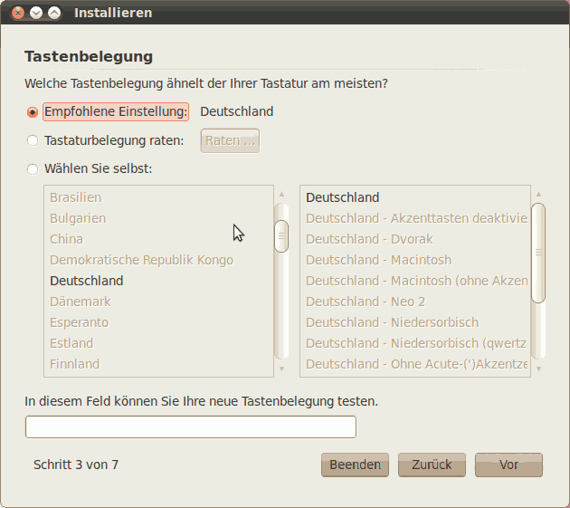

Ubuntu Installation bis Maverick
Archivierte Anleitung
Dieser Artikel wurde archiviert, da er - oder Teile daraus - nur noch unter einer älteren Ubuntu-Version nutzbar ist. Diese Anleitung wird vom Wiki-Team weder auf Richtigkeit überprüft noch anderweitig gepflegt. Zusätzlich wurde der Artikel für weitere Änderungen gesperrt.
Anmerkung: Für Ubuntu 11.04 und neuere Version gibt es einen Übersichtsartikel zur Installation.
Dieser Artikel beschreibt die Installation von Ubuntu mit Hilfe der Desktop-CD (oder "Desktop-DVD"). Im Gegensatz zur "Alternate-CD" gibt es hier einen rein grafischen Installer. Die CD ist so ausgelegt, dass man mit wenigen Handgriffen ein System installieren kann. Das führt aber dazu, dass die Entscheidungsfreiheiten des Benutzers leicht eingeschränkt sind. Dies betrifft im Regelfall aber nur Fortgeschrittene.
Vorbereitungen¶
Wenn sich auf dem Computer schon ein Betriebssystem (wie beispielsweise Windows, Mac OS X oder ein anderes Linux-System) oder wichtige Daten befinden, sollte von den wichtigen Daten unbedingt eine Sicherung erstellt werden. Wie bei jeder Veränderung am Computer kann immer auch etwas schiefgehen.
Voraussetzungen¶
Diese Installationsvariante benötigt einen Computer mit mindestens 256 MB Arbeitsspeicher. Für Systeme mit weniger Arbeitsspeicher sollte die Alternate-CD verwendet werden, deren Installationsprogramm ohne grafische Oberfläche auskommt.
Nach der Installation und einer Aktualisierung belegt das System ca. 3-4 GB. Hinweise zur Festplatteneinteilung findet man im Artikel Partitionierung.
Herunterladen¶
Zuerst sollte die CD (oder DVD) heruntergeladen werden. Im Artikel Downloads sind die entsprechenden Links zu den Download- und Informationsseiten übersichtlich dargestellt. Das heruntergeladene CD/DVD-Abbild ist mit einem geeigneten Programm auf CD-ROM oder DVD zu brennen.
Installation¶
Im folgenden ist immer von der CD die Rede, die Prozedur ist aber auch für die DVD gültig.
Start der Desktop-CD¶
Beim Start des Computers muss die Ubuntu-CD in das CD-Laufwerk eingelegt sein.
Hinweis:
Wenn der Computer trotz eingelegter CD wie gewohnt startet, ist er nicht für den Start von CD eingerichtet. Diese Einrichtung wird im BIOS vorgenommen. Die genaue Vorgehensweise dafür verrät die dem Computer oder Mainboard (dt.: Hauptplatine) beiliegende Anleitung, dieses Dokument 
 oder das Bios-Kompendium . Meist gibt es auch eine Auswahl über eine Taste, mit der sich beim Start ein Laufwerk auswählen lässt. Beim BIOS-Start wird diese oft angezeigt, Beispiele sind
F8 ,
F10 oder
F12 .
oder das Bios-Kompendium . Meist gibt es auch eine Auswahl über eine Taste, mit der sich beim Start ein Laufwerk auswählen lässt. Beim BIOS-Start wird diese oft angezeigt, Beispiele sind
F8 ,
F10 oder
F12 .
Als erstes erscheint dann ein Fenster, in dem man gefragt wird, ob man die Live-CD nutzen oder installieren möchte. Hier ein Überblick der relevanten Startoptionen:
| Möglichkeit | Erklärung |
| Ubuntu ausprobieren | Hierbei startet man erst einmal nur Ubuntu von der CD, und am Rechner wird nichts verändert. Allerdings hat man hier später auch die Möglichkeit, Ubuntu direkt von der Live-CD aus zu installieren. |
| Ubuntu installieren | Man installiert Ubuntu direkt auf der Festplatte - die Oberfläche ist die gleiche wie die von „Ubuntu ausprobieren“, nur fehlen einige Elemente des Desktops, und man kann Ubuntu vorher nicht als Live-System ausprobieren. |
Hier wählt man die gewünschte Option aus, vorher sollte man in der Auswahlliste links die Installationssprache auswählen, z.B. "Deutsch".
Bei den manchen Ubuntu-Versionen erscheint automatisch eine Sprachauswahlliste. Ansonsten drückt man hier F2 , wählt mit den Pfeiltasten hoch/runter "Deutsch" und bestätigt mit "Enter" ⏎ , um in deutscher Sprache fortzufahren.
Danach wird Ubuntu mit der Auswahl "Ubuntu ausprobieren" oder "Installieren" ⏎ gestartet. Nun einfach abzuwarten, bis die Benutzer-Oberfläche (der Desktop) erscheint.
Experten-Info:
Will man ab Ubuntu 9.10 Grub Legacy statt der Vorgabe GRUB 2 verwenden, so muss man in die Befehlszeile (zu erreichen mit F6 und anschließendem Esc ) den Zusatz grub-installer/grub2_instead_of_grub_legacy=false vor -- einfügen.
Hinweis:
Sollte es Probleme mit dem Grafiktreiber geben, z.B. dass man gar keine Anzeige erhält, so kann die Auswahl von "Ubuntu im sicheren Grafikmodus starten" helfen. Bei aktuellen Versionen von Ubuntu erscheint die Option "Abgesicherter Grafikmodus" erst, wenn man die Taste F4 drückt. Falls auch das nicht nützt, findet man unter Ubuntu-CD Problembehebung weitere Tipps.
Start des Installationsprogramms¶
Hat man "Ubuntu ausprobieren" gewählt, erscheint auf der Arbeitsfläche - von nun an ist auch der Einsatz der Maus möglich - ein Icon mit der Beschriftung "Install". Das Installationsprogramm wird durch einen Doppelklick hierauf gestartet.
Hinweis:
Je nach System (Prozessor, Arbeitsspeicher etc.) kann es vorkommen, dass das System nicht umgehend auf Mausklicks etc. reagiert, die Reaktionszeit kann bis zu mehreren Sekunden betragen. Also im Zweifelsfall lieber geduldig sein und etwas warten, anstatt mehrfach zu klicken.
Hinweis:
Die folgenden Bildschirmfotos stammen von Ubuntu 10.04. Bei neueren Versionen hat sich das Design unter Umständen leicht verändert.
Schritt 1: Sprachauswahl¶
Zuerst kann nun die Spracheinstellung korrigiert werden. . Unter Ubuntu 10.04 ist dieser Schritt mit der Auswahl "Live-CD" oder "Installation" kombiniert, siehe oben. Weiter mit "Vor"
Schritt 2: Zeitzone einstellen¶
Nach der Sprachwahl ist bereits die entsprechende Zeitzone voreingestellt. Ansonsten wählt man eine Stadt aus, die sich in der eigenen Zeitzone befindet. Die Voreinstellung "Berlin" ist meist korrekt. Weiter mit "Vor".
Schritt 3: Tastatureinstellung¶
Auch die Voreinstellung für die Tastatur muss man nur ändern, wenn man eine fremdsprachige oder beispielsweise eine DVORAK-Tastatur verwendet.
Die richtige Tastatur-Einstellung für deutsche Tastaturen (egal ob normale Tastatur oder Laptop) ist in der Regel "Deutschland - Akzenttasten deaktivieren" bzw. "Germany - Eliminate dead keys".

Weiter mit "Vor".
Schritt 4: Auswahl der Partition / Partitionierung¶
In diesem Schritt wird die Partition ausgewählt, auf der Ubuntu installiert werden soll.
Achtung!
Bevor irgendwelche Änderungen an der Partitionierung der Festplatte vorgenommen werden, sollte unbedingt eine Datensicherung aller wichtigen Daten erfolgt sein, da Änderungen an den Partitionen zu Datenverlust führen können! Soll eine Windows-Partition vergrößert, verkleinert etc. werden, so sollte vorab eine Defragmentierung der Festplatte unter Windows durchgeführt worden sein.
Es gibt folgende Möglichkeiten:
Löschen und das gesamte Medium verwenden (die gesamte Festplatte wird gelöscht, und Ubuntu partitioniert selbständig)
freien Plattenplatz nutzen (dieser Punkt wird nur angezeigt, wenn ausreichend freier = unpartitionierter Plattenplatz vorhanden ist)
Nebeneinander installieren und bei jedem Start zwischen diesen wählen (Ubuntu partitioniert selbständig und verkleinert die bestehenden Partitionen, falls notwendig)
manuelle Partitionierung
Installiert man (Ubuntu) Linux zum ersten Mal auf dem Rechner, so müssen zumindest eine Installationspartition und eine Swap-Partition angelegt werden. Weitere Informationen enthält der Wiki-Artikel Partitionierung.
Für die Partitionierung wird GParted verwendet.
Anschließend gelangt man zum Menü "Partition vorbereiten". Hier kann man die Einhängepunkte (engl. "Mount Points") festlegen.
Achtung!
Auf der Partition, auf der Ubuntu installiert werden soll, muss ein Mount Point / (bedeutet "Root") ausgewählt werden, sonst beschwert sich das Installationsprogramm, dass keine Root-Partition festgelegt wurde. Dazu klickt man zuerst auf die Partition, auf der Ubuntu installiert werden soll, anschließend auf "Edit partition" und wählt dann als "Mount Point" / .
Weiter mit "Vor".
Schritt 5: Benutzerdaten übernehmen¶
In diesem Schritt bietet das Installationsprogramm an, Daten von anderen Linux-Installationen zu übernehmen. Falls keine Daten vorhanden sind, wird dieser Schritt automatisch übersprungen.
Dazu werden alle erkannten Installationen und die darauf angelegten Benutzerkonten angezeigt. Klickt man auf eines der Benutzerkonten, so kann man dies übernehmen, wobei man vorher Name, Benutzername und Passwort neu festlegen kann und diese nicht unbedingt mit dem bestehenden Konto übereinzustimmen brauchen.
Achtung!
Es ist nicht möglich, die Benutzerdaten von der Partition zu übernehmen, auf die Ubuntu installiert wird, auch wenn sich hierauf noch eine Linux-Installation befinden sollte!

Weiter mit "Vor".
Schritt 6: Benutzerangaben¶
Nun müssen einige Daten zum Hauptbenutzer des Computers eingegeben werden. Dieser Nutzer kann nach Eingabe seines Passwortes wichtige Systemeinstellungen verändern. Das Passwort sollte sorgfältig gewählt werden. Alle Wörter, die auch in einem Wörterbuch auftauchen, können leicht erraten werden und sind deshalb nicht gut geeignet. Sehr gut sind dagegen willkürliche Folgen von Zahlen, Groß- und Kleinbuchstaben, die allerdings schwer zu merken sein können. Der Benutzername für die Anmeldung am System darf nur Kleinbuchstaben und keine Umlaute enthalten.
Weiter mit "Vor".
Schritt 7: Überprüfung und Auswahl Speicherort Bootloader¶
Zum Schluss bekommt man nochmals eine Zusammenfassung aller Eingaben etc. gezeigt.
Möchte man noch etwas ändern, so kann man mittels "Zurück" zum entsprechenden Punkt zurückkehren.
Achtung!
Eventuelle Änderungen an Partitionen können nicht mehr rückgängig gemacht werden!
Klickt man rechts unten im Fenster auf "Advanced", so lässt sich der Speicherort des Bootloaders GRUB 2 festlegen. Dies ist in der Regel der Master Boot Record (MBR) der ersten Festplatte (sda oder (hd0)).
Möchte man den Bootloader in den ersten Sektor der Installationspartition (Partitions-Bootsektor) schreiben, so wählt man als Speicherort die entsprechende Partition, z.B. (hd0,2). Dies ist in der Regel aber nur sinnvoll, sofern schon eine Installation mit Bootmanager vorhanden ist, der dann GRUB oder GRUB 2 im Partitions-Bootsektor der betreffenden Partition laden kann.
Zusätzlich lässt sich im "Advanced Fenster" ein HTTP-Proxy-Server festlegen.
Ein Klick auf "Install" installiert Ubuntu dann endgültig, was je nach Geschwindigkeit des Systems eine Weile dauern kann.
Hinweis:
Am Ende der Installation ist eine Internetverbindung von Vorteil, da Sprachpakete usw. geladen werden. Das kann auch nach der Installation nachgeholt werden. Bei Ubuntu 10.04 muss die Internetverbindung über LAN stattfinden, bei Ubuntu 10.10 ist auch WLAN möglich.
Neustart¶
Nach der Installation wird man gefragt, ob man die Live-CD weiter nutzen oder neu starten möchte. Sobald man alles erledigt hat, kann man hier neu starten. Wichtig ist, dass man die Installations-CD vor dem Start aus dem Laufwerk nimmt. Sonst wird eventuell das Live-Medium gestartet statt von dem neu installierten Ubuntu.
Nach der Installation¶
Ubuntu ist zwar direkt nach der Installation bereits vielseitig verwendbar, aber aus verschiedenen Gründen muss an vielen Stellen oft angepasst werden. Wie man am besten dabei vorgeht, wird im Artikel Erste Schritte erklärt.
Links¶
HowToUbuquityPreserveHome - Home auf selber Partition wie das System auch bei Neuinstallation statt Upgrade behalten (mit Bildschirmfotos)
- Erstellt mit Inyoka
-
 2004 – 2017 ubuntuusers.de • Einige Rechte vorbehalten
2004 – 2017 ubuntuusers.de • Einige Rechte vorbehalten
Lizenz • Kontakt • Datenschutz • Impressum • Serverstatus -
Serverhousing gespendet von